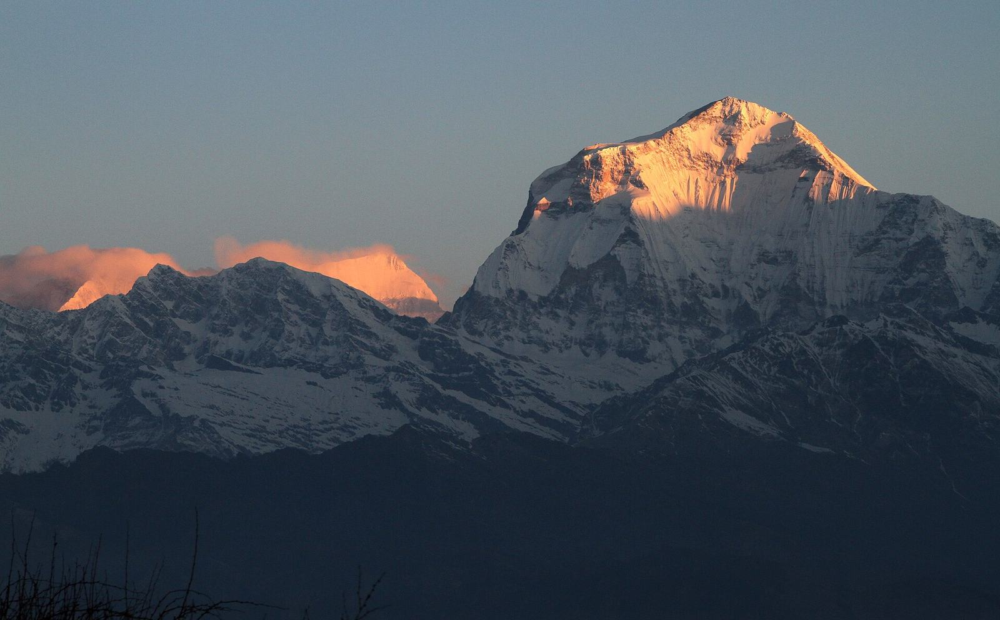
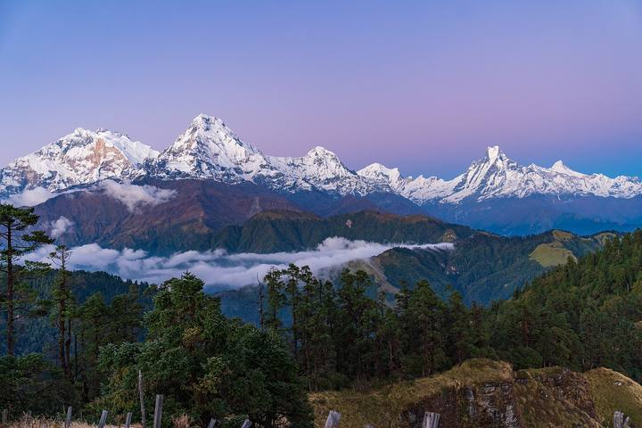

Ghorepani Poon Hill
Four or five days from Pokhara: up the Ulleri steps to Ghorepani, dawn on Poon Hill at 3,210 m, then along a forest ridge to Tadapani and the Gurung village of Ghandruk.


- Duration
- 3–6 days
- Distance
- 40 kmapproximate
- Highest point
- 3,210 mPoon Hill · 10,531 ft
- Highest night
- 2,860 mGhorepani
- Difficulty
- EasyTeahouse lodges
- Best months
- Mar–Apr, Oct–Nov
Is this trek right for me?
The walking
5 days in all. Most walking days are 3 to 4 hours on foot, and the longest is about 7 hours. Short days below 3,500 m on good paths. Fine for a first trek.
The height
You never sleep above 2,860 m, so altitude is not a worry on this trek.
Where you sleep
In lodges every night: a simple twin room, a shared bathroom and hot meals in a warm dining room.
The help you need
The rules require a licensed guide on this route. A porter to carry your bag is your choice.
What it costs
A guided trip with a trekking company usually costs USD 300 to 600 a person, going by the prices 9 companies published for 2026.
Overview
This is the best-known short trek in Nepal and, for many people, the first. It climbs from the Modi Khola through Magar villages to the lodge village of Ghorepani, goes up Poon Hill before dawn for the view of Dhaulagiri and the Annapurnas, and returns along a forested ridge to Tadapani and Ghandruk. The highest point is 3,210 m and you sleep no higher than 2,860 m, so altitude is rarely a problem.
What it asks for is leg strength. The second day climbs more than 1,300 m, starting with the stone staircase to Ulleri, and the day from Ghorepani to Tadapani goes up and down through forest for five or six hours. In March and April the rhododendron trees along the ridge are in flower. In October and November the air is clearest and the viewpoint is crowded: expect several hundred people on the hill at sunrise.
The road has crept in at both ends. A jeep track follows the Bhurungdi Khola to Hile and Tikhedhunga, in dry weather some jeeps carry on to Ulleri, and Ghandruk has a road to its lower edge. The plan below keeps the classic walking stages, and you can shorten it by riding the first and last sections. Between Ulleri and Ghandruk the trail is still a footpath, with lodges every hour or so.
Highlights
- Sunrise over Dhaulagiri and the Annapurnas from Poon Hill
- Rhododendron forest in bloom in March and April
- The stone staircase of more than 3,000 steps to Ulleri
- Ghandruk's slate-roofed houses and Gurung museum
- Machhapuchhre and Annapurna South from the lodges at Tadapani
Easy: Low altitude, short stages and good lodges, though the 1,300 m climb to Ghorepani on day two is a real workout.
Altitude profile
Height at the end of each day, with the high points in between. Dots are the places you sleep.
Low altitude risk. You never sleep above 3,000 m on this itinerary, so altitude illness is unlikely. Mild headaches and breathlessness on the climbs are still normal.
Day by day
About 17–22 h of walking in total. Times are for a steady pace with short breaks; add more for photos and tea.
-
Day1
Drive to Nayapul, walk to Tikhedhunga
Nayapul to Birethanti to Tikhedhunga
Permits are checked at Birethanti. From there the way follows a jeep track up the Bhurungdi Khola past Hile, with footpath shortcuts between the bends. It is hot and dusty in the afternoon, which is why many groups ride this section.
20 places to stay in Tikhedhunga, such as Indra Guest House, Manisha Guest House and Chandra Guesthouse. See them
- Sleep at
- 1,540 m
- Change
- +470 m
- Walking
- 3–4 h
- Distance
- 9 km
-
Day2
Tikhedhunga to Ghorepani
Tikhedhunga to Ulleri to Banthanti to Ghorepani
The hardest day. A suspension bridge leads straight onto the Ulleri staircase, about 500 m of climbing on stone steps, then the gradient eases through oak and rhododendron forest past Banthanti and Nangethanti. You gain over 1,300 m, so start early and keep a steady pace.
27 places to stay in Ghorepani, such as Dhaulagiri Lodge, Snow View and Fishtail Lodge & Restaurant. See them
- Sleep at
- 2,860 m
- Change
- +1,320 m
- Walking
- 5–7 h
- Distance
- 10 km
-
Day3
Poon Hill sunrise, then to Tadapani
Ghorepani to Poon Hill to Tadapani
Set out about an hour before sunrise for the 350 m climb to the viewpoint. After breakfast the trail climbs again to a ridge almost as high as Poon Hill, drops steeply through forest to a stream, then makes a last short climb to Tadapani.
15 places to stay in Tadapani, such as Tadapani Guest House, Annapurna Guest House and Hotel Super Viewpoint. See them
High point day- Sleep at
- 2,630 m
- Change
- −230 m
- High point
- 3,210 m
- Walking
- 6–7 h
- Distance
- 13 km
-
Day4
Tadapani to Ghandruk
A steady descent of about 700 m through forest, steep and rooty in places, to the terraces above Ghandruk. You arrive by lunch, which leaves the afternoon for the old village, the museum and the view up the Modi Khola.
61 places to stay in Ghandruk, such as Annapurna Guesthouse, Annapurna Guesthouse Restaurant And Bar and Hotel Gurkhas Villa. See them
- Sleep at
- 1,940 m
- Change
- −690 m
- Walking
- 3–4 h
- Distance
- 7 km
-
Day5
Ghandruk to Pokhara
Ghandruk to Kimche to Nayapul to Pokhara
Jeeps leave from the stand below the village and buses from Kimche, an hour down the steps. If you prefer to walk out, the old trail to Birethanti and Nayapul takes four to five hours and follows the road for much of the way.
Travel day- Sleep at
- 822 m
- Change
- −1,118 m
- Jeep
- 3–4 h
Ways to change it
Three days by jeep
Ride to Tikhedhunga or Ulleri, walk to Ghorepani the same day and reach the road at Ghandruk on day three. It works, but it leaves out much of what makes the loop a trek.
Out by Tatopani
From Ghorepani descend west through Chitre and Shikha to the hot springs at Tatopani on the Kali Gandaki, a drop of about 1,700 m, and return to Pokhara by road through Beni.
On to Annapurna Base Camp
From Tadapani a trail drops to the Kimrong Khola and climbs to Chhomrong, joining the Sanctuary route. Allow ten to eleven days in all.
Add Mohare Danda or Khopra Danda
Quieter ridge trails link Ghorepani with the community lodges at Mohare Danda to the south-west and Khopra Danda to the north.
Route map
The map loads when you scroll here. It needs a connection the first time; tiles you have viewed stay available offline.
The solid line follows footpaths mapped in OpenStreetMap. It is a guide to where the route goes, not a navigation track: trails are rerouted after landslides, so follow the signs and people on the ground. Marker positions come from OpenStreetMap where we could match a place, and from our own estimates elsewhere.
Download the trail for a map app A GPX file with 35 km of mapped path and every stop. It opens in free apps such as Organic Maps.
When to go
- January: good
- February: good
- March: best time
- April: best time
- May: good
- June: difficult
- July: difficult
- August: difficult
- September: good
- October: best time
- November: best time
- December: good
October and November are clearest. March and April are warmer and hazier, with the rhododendron forest in bloom. Winter is cold, with occasional snow and ice between Ghorepani and Tadapani, but the trails are quiet. In the monsoon expect daily rain, leeches and little chance of a view.
Permits and guide rules
Guide required. Since April 2023 the Nepal Tourism Board has required foreign trekkers in conservation areas to walk with a licensed guide, though checks on the trail are inconsistent. The path here is easy to follow; a guide is most useful for securing rooms in Ghorepani and Tadapani in peak season and for the long forest stretch to Tadapani, which is lonely enough that walking it alone is not advised.
ACAP
Conservation areaAnnapurna Conservation Area Permit · National Trust for Nature Conservation
| Foreign nationals | NPR 3,000 | person, single entry |
| SAARC nationals | NPR 1,000 | person, single entry |
Where: Online at NTNC's e-permit site, or in person at the Tourist Service Centre in Bhrikutimandap, Kathmandu, and the Nepal Tourism Board office in Pokhara. A permit issued at a trail checkpost costs double.
The fee includes tax and children under 10 do not need a permit. Paying online by card adds a 2.9% gateway charge. Covers every trek in the Annapurna range and Lower Mustang; Upper Mustang and Nar Phu need a restricted-area permit as well.
TIMS card
RegistrationTrekkers' Information Management System card · Nepal Tourism Board and the Trekking Agencies' Association of Nepal
| Foreign nationals | NPR 2,000 | person, per trek |
| SAARC nationals | NPR 1,000 | person, per trek |
Where: Only through a registered trekking agency, which applies in the Nepal Tourism Board's online system with your route and your guide's details. Individual trekkers can no longer buy one over the counter.
Since the revised rules of 31 March 2023 the card is tied to trekking with a licensed guide on the tourism board's listed routes. It is not used in Khumbu, where the municipality's Trek Card took its place in 2017. For restricted areas the published rules pull both ways: TAAN's pages say TIMS applies in every trekking area, restricted ones included, yet also list visitors holding Department of Immigration permits among those who do not need one, and agencies disagree. Your agency, which is compulsory there anyway, will know what the checkposts on your route ask for. Reports from 2025–26 describe patchy checks of the card, especially in Annapurna.
Agency required
Fees and rules change, sometimes mid-season. Treat these as a planning guide and confirm with the Nepal Tourism Board, the Department of Immigration or a registered agency before you travel. Last reviewed 2026-11. All permits and fees
Getting there
Drive from Pokhara to Nayapul in about an hour and a half; walking starts across the bridge at Birethanti. A jeep track continues up the valley to Hile and Tikhedhunga, and the trek ends at the road in Ghandruk, about three hours from Pokhara.
-
Drive: Pokhara to Nayapul · 1.5–2 hr
Taxi, private car or the local bus from the Baglung bus park.
-
Jeep: Pokhara to Tikhedhunga · 2.5–3 hr
Saves the first three hours of walking, most of which are on the jeep track anyway. In dry weather some jeeps continue to Ulleri.
-
Jeep: Ghandruk to Pokhara · 2.5–3 hr
From the stand below the village. Local buses leave from Kimche, an hour's walk down.
Hazards on this route
Steep steps and long descents
The Ulleri staircase and the drop from Tadapani are hard on the knees and slippery when wet or frosty. Poles help. In winter the shaded forest sections between Ghorepani and Tadapani hold ice well into the day.
Cold and crowds on Poon Hill
The pre-dawn wait at 3,210 m is below freezing for much of the season, and the path is a line of head torches. Dress warmly, keep to the steps and do not rush the climb.
Vehicles on the lower trail
Below Tikhedhunga and around Ghandruk you share the way with jeeps. Step well off the track when one passes, and expect dust in dry weather and mud after rain.
Rain and leeches in the monsoon
From June to early September the forest is full of leeches and the trail runs with water. Cloud usually hides the mountains by mid-morning.
Practical tips
- Book Ghorepani and Tadapani lodges ahead in October, November, March and April.
- If dawn is cloudy, wait. The view from the upper lodges in Ghorepani an hour later is often as good as the hilltop.
- Carry a head torch, gloves and a warm jacket for Poon Hill, even in spring.
- There is no cash machine after Pokhara. Bring cash, including small notes for the Poon Hill entry ticket.
- Sunset on Poon Hill is far quieter than sunrise, and you can see both if you reach Ghorepani by early afternoon.
We know of no cash machines on this route. Carry all the rupees you need from Pokhara. Work out how much.
Plan this trek
Choose your dates and see the whole trip on one page: where you sleep each night, who can help you, what it may cost and the papers you need. Then ask for a price.
More tools for this trek
Who can help you on this trek
The rules require a licensed guide on this route. A porter to carry your bag is your choice.
-
A trekking company that arranges everythingUsually USD 300 to 600 a person for everything on the trek.
-
A guide, and a porter to carry your bagAbout USD 25 to 40 a day for the guide and USD 18 to 25 for the porter.
-
A guideAbout USD 25 to 40 a day.
-
A porter to carry your bagThe rules require a licensed guide on this route.
-
On your ownThe rules require a licensed guide on this route.
Do you work on the Ghorepani Poon Hill route as a guide, porter or company? Join TrekkSewa.
Quick answers
How long does the Ghorepani Poon Hill trek take?
Most people take 3–6 days. The itinerary on this page is 5 days.
How high does the Ghorepani Poon Hill trek go?
The highest point is Poon Hill at 3,210 m (10,531 ft). The highest place you sleep is Ghorepani at 2,860 m.
How difficult is it?
We grade it easy. Low altitude, short stages and good lodges, though the 1,300 m climb to Ghorepani on day two is a real workout.
Which permits do I need?
ACAP, TIMS card. Fees and where to get each one are listed in the permits section above.
Do I need a guide?
Since April 2023 the Nepal Tourism Board has required foreign trekkers in conservation areas to walk with a licensed guide, though checks on the trail are inconsistent. The path here is easy to follow; a guide is most useful for securing rooms in Ghorepani and Tadapani in peak season and for the long forest stretch to Tadapani, which is lonely enough that walking it alone is not advised.
When is the best time to go?
Mar–Apr, Oct–Nov are best. October and November are clearest. March and April are warmer and hazier, with the rhododendron forest in bloom. Winter is cold, with occasional snow and ice between Ghorepani and Tadapani, but the trails are quiet. In the monsoon expect daily rain, leeches and little chance of a view.
The stages on this route are well established. Reviewed 2026-11. Trails, lodges and rules change; confirm locally before you rely on any detail. Report a correction.
Similar treks
More in Annapurna Annapurna
Annapurna
Annapurna Base Camp
Up the Modi Khola gorge into a ring of 7,000 and 8,000 m peaks
 Annapurna
Annapurna
Khopra Ridge
Community lodges on a quiet ridge face to face with Dhaulagiri

AnnapurnaMohare Danda
Village-run lodges on a quiet trail to a 3,300 m viewpoint
 Annapurna
Annapurna
Mardi Himal
A narrow ridge walk to the foot of Machhapuchhre in five days